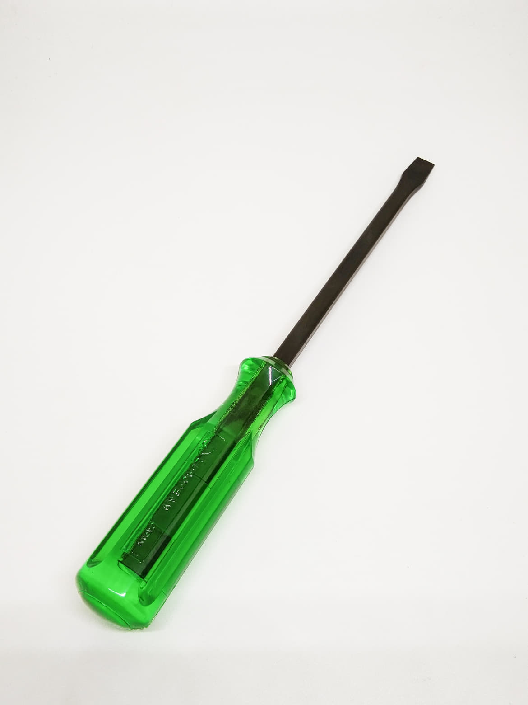

 ไขควงถือว่าเป็นเครื่องมือช่างพื้นฐานที่สามารถพบเจอได้ทั่วไป เป็นเครื่องมือสำหรับใช้สำหรับคลายและขันนอต สกรูต่างๆ นิยมใช้สำหรับรื้อถอดประกอบอุปกรณ์ไฟฟ้า ต่อฟิวส์ ประกอบดวงโคมไฟ หรือซ่อมสวิทซ์ปลั๊กไฟฟ้า ถอดตะปูเกลียวและอื่นๆ อีกมากมาย ไขควงที่มีคุณภาพจะทำจากเหล็กกล้าหรือเหล็กเครื่องมือใช้วิธีตีขึ้นรูปและชุบเพื่อให้ผิวของไขควงแข็งใช้งานได้ดี
ไขควงมีลักษณะเป็นแท่งโลหะทรงสูงยาวมีหลากหลายขนาด ตั้งแต่หัวเล็กถึงหัวใหญ่ ปลายไขควงจะมีลักษณะแหลมคม มีรูปลักษณ์ที่แตกต่างกันไปบ้าง นั่นก็เพื่อใช้ในการขันสกรูที่รูปร่างแตกต่างกัน ซึ่งไขควงถือเป็นเครื่องมือช่าง ที่สำคัญและได้ใช้งานค่อนข้างบ่อยที่สุด เพราะส่วนมากเครื่องใช้และอุปกรณ์ต่างๆ รวมถึงประตู หน้าต่าง ที่ต้องมีนอตเป็นส่วนประกอบอยู่ เพราะฉะนั้นจึงควรมีไขควงไว้ที่บ้านเพื่อใช้ซ่อมแซมเครื่องใช้ไฟฟ้า หรือสิ่งของต่างๆ
วิธีการใช้ไขควงปากแบน
วิธีบำรุงรักษาไขควงปากแบน
ข้อควรระวังในการใช้ไขควงปากแบน
วิธีการใช้ไขควงปากแบน
1.เลือกขนาดของไขควงให้เหมาะสมกับหัวสกรูที่ต้องไข
2.ตรวจสอบไขควงว่าอยู่ในสภาพดีหรือไม่
3.วิธีขันไขควงให้ใช้มือขวากำด้ามไขควงขณะมือซ้ายจับก้านไขควงลงที่บ่าสกรูพอดี ใช้มือซ้ายประคองก้านไขควงให้ใบไขควงสัมผัสกับร่องสกรูตลอดเวลา
4.ทั้งการขันและคลายให้กดไขควงลงกลางสกรูให้แน่นต้องมั่นใจว่าใบไขควงสัมผัสกับร่องของสกรูตลอดเวลาเพื่อไม่ให้หัวสกรูเยิน
5.ห้ามใช้ไขควงแคะ แกะ งัดชิ้นงานทุกชนิด หรือใช้ไขควงแทนสกัด
Back to top
วิธีบำรุงรักษาไขควงปากแบน
• ตรวจสอบตรวจซ่อมไขควงให้มีสภาพการใช้งานได้อย่างมีประสิทธิภาพ
• ทำความสะอาดหลังการใช้งานทุกครั้ง
• ก่อนนำไปเก็บให้ชโลมนำมันเครื่องใสทุกครั้ง
Back to top
ข้อควรระวังในการใช้ไขควงปากแบน
1. เลือกขนาดปากไขควงให้เข้ากับร่องของสกรู
2. ไขควงต้องสะอาด หลังจากการใช้งานควรเช็ด เพื่อไม่ให้ไขควงลื่นมือ
3. อย่านำไขควงไปใช้งานผิดประเภท เช่น นำไปแกะสลักหรือนำไปแทงวัสดุ หรือแม้แต่ใช้เป็นอาวุธทำร้ายคนโดยเด็ดขาด
4. หมั่นดูแลรักษา และเช็คสภาพปากไขควงเสมอว่า ปากไขควงนั้น บิ่นหรือชำรุดหรือไม่
Back to top
แหล่งที่มา : http://www.psptech.co.th/%E0%B8%84%E0%B8%A7%E0%B8%B2%E0%B8%A1%E0%B8%A3%E0%B8%B8%E0%B9%89%E0%B8%97%E0%B8%B1%E0%B9%88%E0%B8%A7%E0%B9%84%E0%B8%9B%E0%B9%80%E0%B8%81%E0%B8%B5%E0%B9%88%E0%B8%A2%E0%B8%A7%E0%B8%81%E0%B8%B1%E0%B8%9A-%E0%B9%84%E0%B8%82%E0%B8%84%E0%B8%A7%E0%B8%87screw-drivers-16711.page